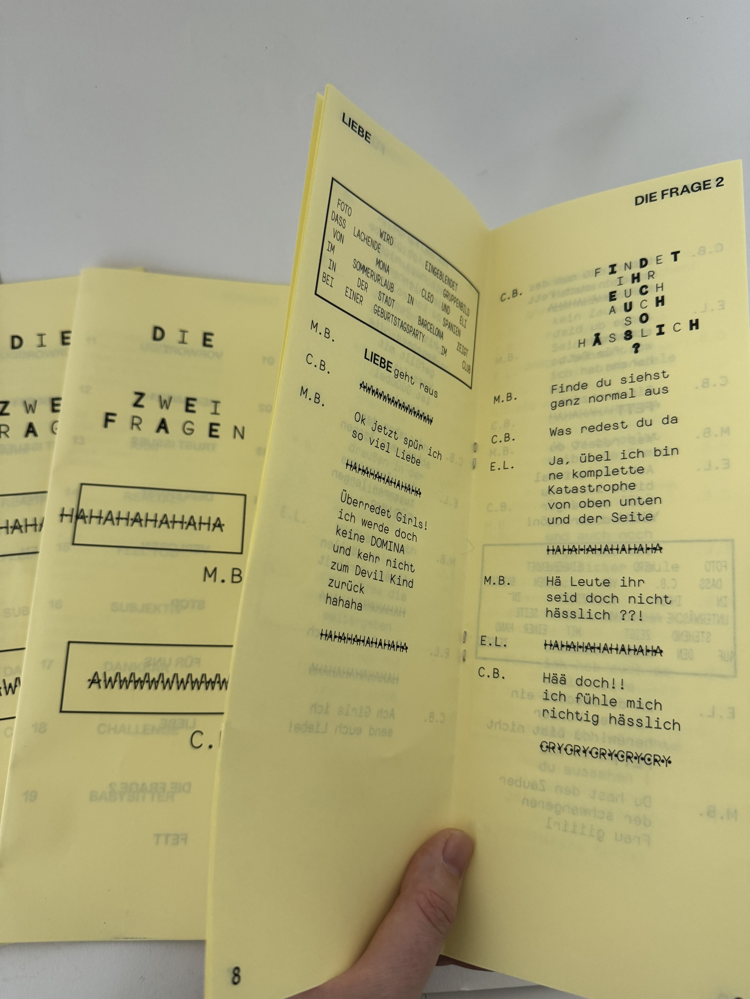
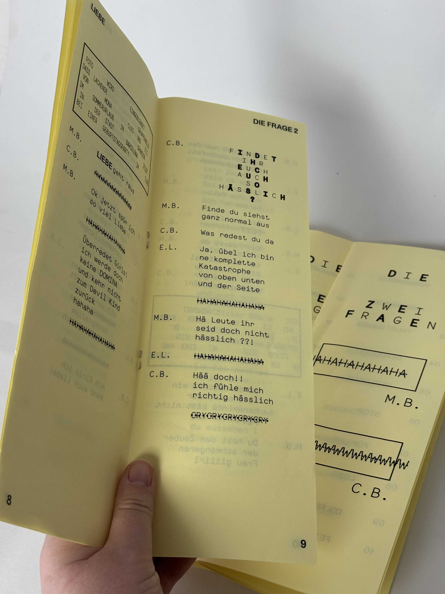
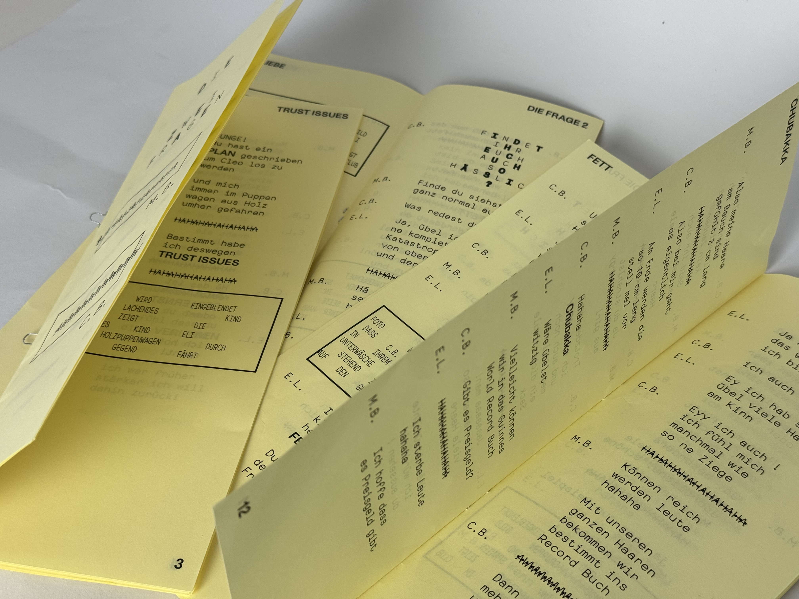
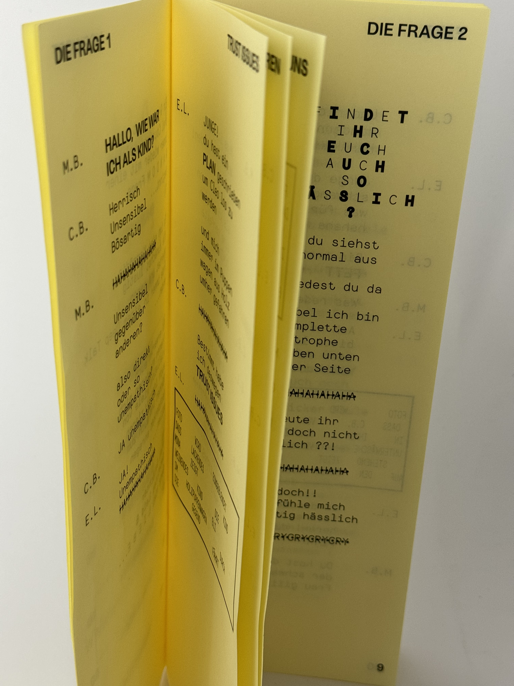
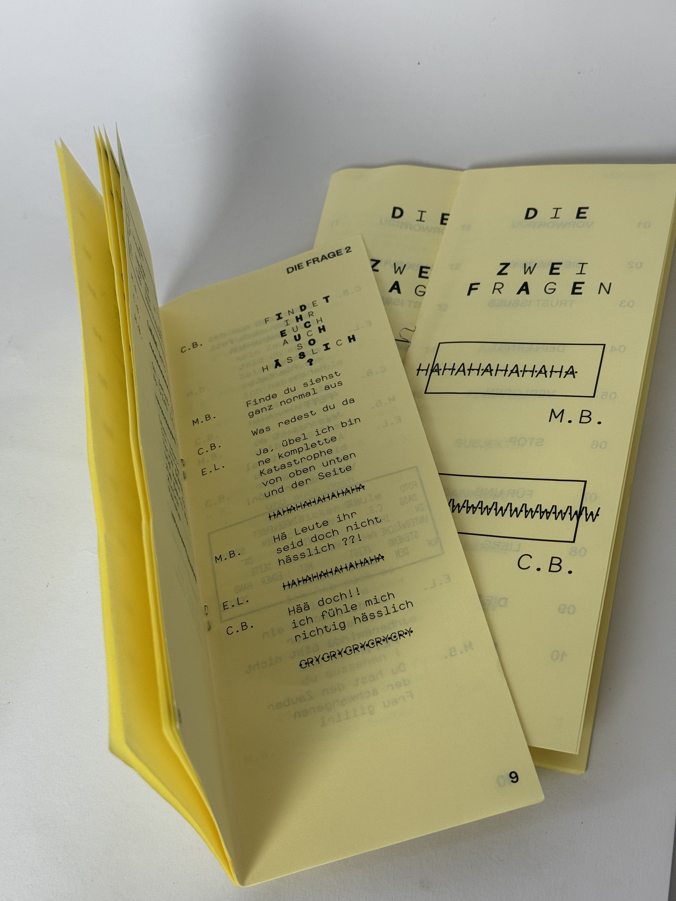
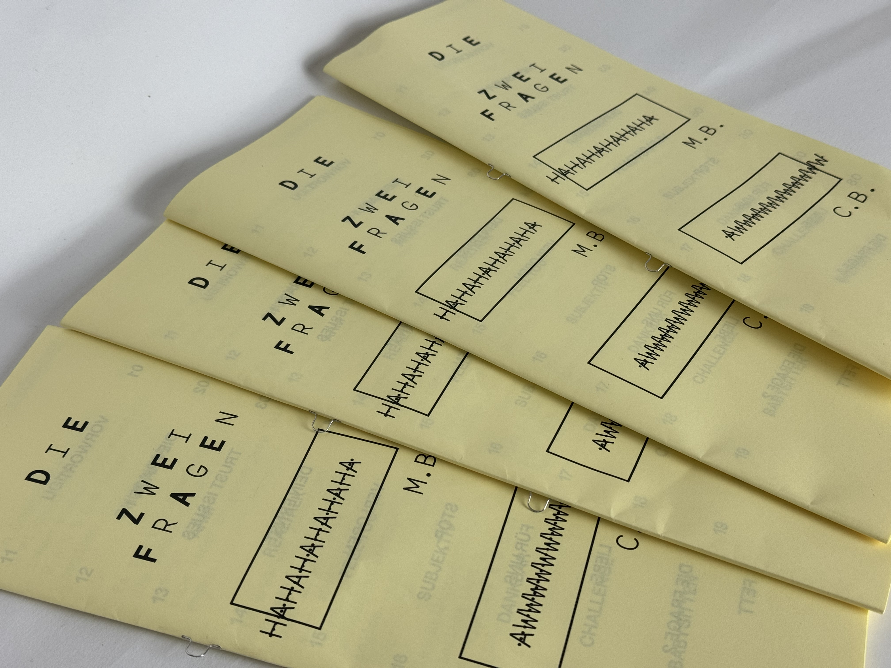

TYPE & PRINT 1




THE 2 QUESTIONS
The project revolves around a family group chat on WhatsApp, where everyday problems and deep, thought-provoking discussions are mixed with humor and unexpected moments of drama. Through the lens of three cousins, the chat explores personal experiences, questions, and the bonds that shape their relationships. Together, they navigate issues of identity, family expectations, and self-discovery, captured in a zine that blends text and visuals, offering an intimate and relatable portrayal of modern communication.


